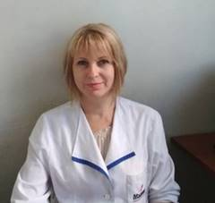
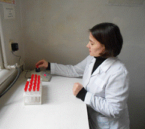
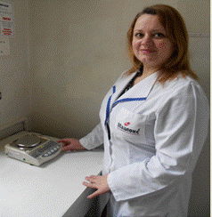
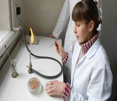
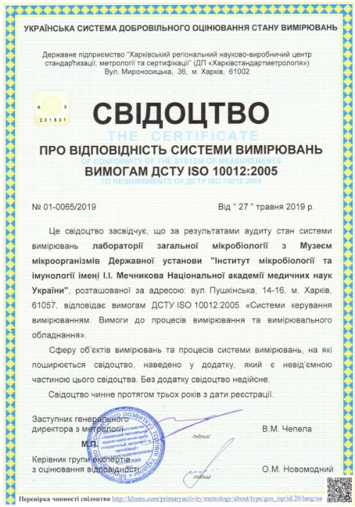

Перетятко О.Г., завідувач лабораторії, кандидат медичних наук

Ягнюк Ю.А., провідний науковий співробітник, кандидат медичних наук

Холодна Т.В., провідний інженер

Волянська Є.Ю., лаборант І категорії
Основні дослідницькі проекти лабораторії:
- НАМН 127/2015 Розробка засобів впливу на біоплівкоутворення мікроорганізмів роду Enterococcus
- НАМН 141/2018 Дослідження закономірностей еволюції антибіотико резистентності у найпоширеніших різновидів збудників гнійно-запальних інфекцій
Поточні публікації:
- Спосіб контролю функціональності тест-системи для видової ідентифікації ентерококів шляхом використання штаму Enterococcus raffinosus 42-Д / Л. Г. Мироненко, О. Г. Перетятко, Ж. Е. В’ялих, М. Г. Божко [та ін.] // Інформ. бюлетень НАМН України (додаток до "Журналу Національної академії, медичних наук України"). – 2015. – Вип. 39. – С. 61.
- Мироненко, Л. Г. Вивчення біоплівкоутворення ентерококів, вилучених з різних екотопів / Л. Г. Мироненко, О. Г. Перетятко, Ю. А. Ягнюк // Вісник проблем біології і медицини. – 2015. – Випуск 3, том 2 (123). – С. 290-293.
- Характеристика факторів патогенності штамів, ізольованих від хворих на урологічну патологію / Л. Г. Мироненко, О. Г. Перетятко, Ю. А. Ягнюк, Р. В. Куцик // Буковинський медичний вісник. – 2015. – Том 19 , № 4 (76). – С. 111-114.
- Мироненко, Л. Г. Формування біоплівок ентерококами, виділеними від хворих на нейрохірургічну патологію / Л. Г. Мироненко, О. Г. Перетятко, Ю. А. Ягнюк // Медична наука та медична практика в Україні: проблеми розвитку та взаємодії: міжнародна науково-практична конференція. – Одеса, 2015. – С. 45-47.
- Вивчення здатності до утворення біоплівок ентерококами, вилученими з різних екотопів / Л. Г. Мироненко, О. Г. Перетятко, Ю. А. Ягнюк, І. П. Ткачик // Актуальні питання боротьби з інфекційними захворюваннями: науково-практична конференція за участю міжнародних спеціалістів. – Харків, 2015. – С. 14.
- Мироненко, Л. Г.Способность к биопленкообразованию Enterococcus faecalis, выделенных от больных сахарным диабетом с синдромом диабетической стопы / Л. Г. Мироненко, О. Г. Перетятко, Ю. А. Ягнюк // Сучасна медицина: актуальні проблеми, шляхи вирішення та перспективи розвитку»: міжнародна науково-практична конференція. – Одеса, 2015. – С. 45-47.
- Мироненко, Л. Г. Порівняльний аналіз результатів вивчення біоплівкоутворення ентерококів фотометричним методом при довжині хвилі 570 та 620 нм / Л. Г. Мироненко, О. Г. Перетятко, Ю. А. Ягнюк // « Актуальні питання медичної теорії та практики»: міжнародна науково-практична конференція. – Дніпрпетровськ, 2015. – С. 69-71.
- Мироненко, Л. Г. Характеристика біоплівкоутворюючих властивостей ентерококів, вилучених від хворих на гострі кишкові інфекції / Л. Г. Мироненко, О. Г. Перетятко, Ю. А. Ягнюк // «Рівень ефективності та необхідність впливу медичної науки на розвиток медичної практики» міжнародна науково-практична конференція. – Київ, 2016. – С. - 65-67.
- Мироненко, Л. Г. Визначення оптимальних умов для формування біоплівок ентерококами / Л. Г. Мироненко, О. Г. Перетятко, Ю. А. Ягнюк // Медичний форум. – 2016. –№ 7 (07). – С. 122-125.
- Мироненко, Л. Г. Изучение влияния глюкозы на способность энтерококков к формированию биопленок / Л. Г. Мироненко, О. Г. Перетятко, Ю. А. Ягнюк // «Вітчизняна та світова медицина: вимоги сьогодення»: міжнародна науково-практична конференція. 14-15 жовтня. – Дніпро. – 2016. – С. 56-58.
- Мироненко, Л. Г. Вивчення впливу Е-амінокапронової кислоти на формування біоплівок ентерококами / Л. Г. Мироненко, О. Г. Перетятко, Ю. А. Ягнюк // «Медицина ХХІ століття: перспективні та пріоритетні напрями наукових досліджень»: міжнародна науково-практична конференція. 22-23 липня. – Дніпро. – 2016. – С. 46-48.
- Мироненко, Л. Г. Вивчення біоплівкоутворення ентерококів фотометричним методом з моделюванням біоплівок на абіотичних поверхнях з полістиролу / Л. Г. Мироненко, О. Г. Перетятко, Ю. А. Ягнюк // Анали Мечниківського Інституту. – 2016. – N 4. – С. 45-49. - Режим доступу до журн. www.imiamn.org.ua/journal.htm.
- Мироненко, Л. Г. Вплив ентерококової інфекції на будову селезінки імунокомпрометованих щурів / Л. Г. Мироненко, І. І. Торяник, О. Г. Перетятко, Ю. А. Ягнюк // «Щорічні терапевтичні читання: медикаментозна та не медикаментозна профілактика неінфекційних захворювань погляд в майбутнє»: міжнародна науково-практична конференція. 20 квітня. – Харків. – 2017. – С. 192.
- Мироненко, Л. Г. Патогістологічна оцінка лімфатичних вузлів імунокомпрометованих щурів з експериментальною ентерококовою інфекцією / Л. Г. Мироненко, І. І. Торяник, О. Г. Перетятко, Ю. А. Ягнюк // «Щорічні терапевтичні читання: медикаментозна та не медикаментозна профілактика неінфекційних захворювань погляд в майбутнє»: міжнародна науково-практична конференція. 20 квітня. – Харків. – 2017. - С. 193.
- Мироненко, Л. Г. Вплив гентаміцину та гентаміцину з пенетратором на життєздатність ентерококів у біоплівці / Л. Г. Мироненко, О. Г. Перетятко, Ю. А. Ягнюк, А. В. Мартинов // «Здобутки та перспективи у боротьбі з інфекційними захворюваннями»: міжнародна науково-практична конференція. 18-19 травня. – Харків. – 2017. – С. 110.
- Myronenko L.G. Influence of gentamicin on enterococci biofilm formation / L.G. Myronenko, O.G. Peretyatko, J.A. Iagniuk, A.V. Martynov // Annals of Mechnikovs Institute. – 2017. – N 3. – P. 51-55. www.imiamn.org.ua/journal.htm.
- Мироненко Л.Г. Вплив гентиміцину та комбінації гентиміцину з ε-амінокапроновою кислотою на формування біоплівок ентерококами / Л.Г. Мироненко, О.Г. Перетятко, Ю.А. Ягнюк // Науково-практична конференція Інфекційні хвороби сучасност: етіологія, епідеміологія, діагностика, лікування, профілактика, біологічна безпека: щорічні «Читання» пам’яті академіка Л.В. Громашевського, присвячені 130 річчю від дня народження академіка Льва Васильовича Громашевського12-13 жовтня 2017 рокум. Київ .– 2017. С. 97-98.
- Popov M.M. The characteristics of viability and conformity with the taxonomic position of the lyophilized samples of Escherichia coli strains, which were isolated in 1946-1959 / M.M. Popov, O.G. Peretyatko, J.A. Iagniuk // Annals of Mechnikovs Institute. – 2018. – N 3. – P. 19-22. -www.imiamn.org.ua/journal.htm.
- Попов М.М. Антибіотикорезистентність бактерій: причини, механізми розвитку, наслідки / М.М. Попов, О.Г. Перетятко, Ю.А. Ягнюк // Південноукраїнський медичний науковий журнал. – 2018. – № 20. – С. 55-58.
- Popov M.M. Characteristics of antibiotic sensitivity of museum strains of Escherichia coli isolated in 1946-1959 yy / M.M. Popov, O.G. Peretyatko, J.A. Iagniuk, G. M.Bolshakova, T. V. Kholodna // Annals of Mechnikovs Institute. - 2018. - N 4. - P. 35-39. -www.imiamn.org.ua/journal.htm.
- Попов М.М. Вивчення життєздатності та таксономічного положення ліофілізованих зразків музейних штамів Escherichia coli / М.М. Попов, О.Г. Перетятко, Ю.А. Ягнюк, Т. В. Холодна // Міжнародна наукова конференція « Медична наука та практика: актуальні питання взаємодії» – 2019, Київ – С. 107-109.
- Popov M. M. Antibiotic susceptibility of museum strains of Escherichia coli isolated from 1946-1959 / M. M Popov, O. G. Peretyatko, Yu. A. Yagnyuk, T. V. Kholodna // International scientific conference "Modern problems of world medicine and its role in the provision of health of the world community" February 16-17, 2019, Odesa. –P. 97-99.
Патенти
- Патент на корисну модель № 116093 (UA); МПК (2006.01) С12Q 1/02 Спосіб підсилення біоплівкоутворення ентерококами / Мироненко Л.Г., Перетятко О.Г., Ягнюк Ю.А., Мартинов А.В.; заявник та патентовласник: ДУ «Інститут мікробіології та імунології ім. І. І. Мечникова НАМН України». – з. № u 2016 11182, дата подання: 07.11.2016, опубл. 10.05.2017, Бюл. № 9
- Патент на корисну модель 122363 (UA); IPC (2006.01) C12R 1/46. Спосіб інгібіції біоплівкоутворення ентерококів / Мироненко Л.Г., Перетятко О.Г., Ягнюк Ю.А.; заявник та патентовласник: ДУ «Інститут мікробіології та імунології ім. І. І. Мечникова НАМН України». – з. № u 2017 03299, дата подання: 19.04.2017, опубл. 10.01.2018, Бюл. № 1
Свідоцтво:
